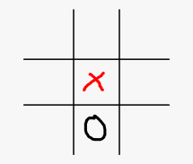
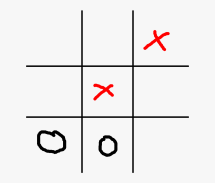
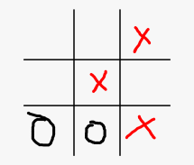
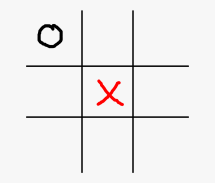
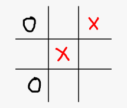
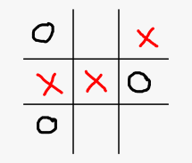

Making an unbeatable tictactoe bot without using the Minimax algorithm
Helloworld , This week I decided to write a small script / bot to play tictactoe against it and yes the bot isnt that dumb althought I havent used the Minimax algorithm which is usually how programmers write decison based game bots like TicTactoe as well chess you and yes the reason I didnt write this I was not able to understand it :( , Although the basics are easy and understandable but As it is based on recurssion , I was not able to implement it in code . I could have copied the code from the web and just tweaked it for my liking but I didnt wanted to that . I am trying to learn and implement it adter thats done I will update the code . But this is blog post how I was able to implement my bot ,its not as efficient as the minimax algo but its actually pretty impressive .
Before I start explaining about the code and All the technical stuff The bot is written in javascript and also hosted with my website so you can play with it here . I wanted the bot to be on a website rather than telling my friends to compile / run the code themself on their machines and yes my friends are lazy so they wouldnt have done it , thats why i used javascript and as this is a small project I did not use any front end framework like react .
The big difference between my algorithm and minimax is that minimax tries to win the game from the very start although mine doesnt try to that it only plays the move when either the opponent is winning or it itself is winning . I defined a function called CheckIfWinner , which basically checks if there is a winner on the board in the next move , the function takes a board and also the symbol which is supposed to win like X or O . Now you might have a little idea about how the bot works . Getting here was easy the actual problem starts when there is no such move that either wins for the bot or the player , you can just get the empty spots and choose one of them but well you see there are some cases where the specfic move should played else it will be possible for the opponent where there is no way to stop from them winning something like this , In this case there is no way for the player X to win since player O has 2 wins and player X can only stop of one them .

So it was important for the bot to know what to be played in particular cases And yes its actually quite possible for someone to write if else for each and every position , but it will be dumb obviously .
So the bot starts out capturing the center , since center blocks most of the ways opponent more specfically 5 of 9 ways to win , it leaves opponent only 4 sides to win , As i said before the objective of the bot is not win but to draw the game . Now here there is anothe case that what if the center is already taken by the opponent since the opponent starts first . In this case the optimal move it to play any corner , because playing on any side can lead to something like this , where the bot loses because player X 2 wins .
  
Now lets see what happens if we play a corner move instead of playing a side
  
In this above case It doesnt matter which move you play except if its a corner, it will lead to the same position where you will loose because the opponent will get 2 wins .
This is just a sample on how there needs to be a specific type of move to not lose the game , There are onl 3 cases like this which i have implmented in my bot enough for it to Draw every game . You can check the source code here. you can get the css and javascript file inside the tictactoe folder and tictactoe.html is the main html file I will soon improve this project by implementing the minimax algorithm